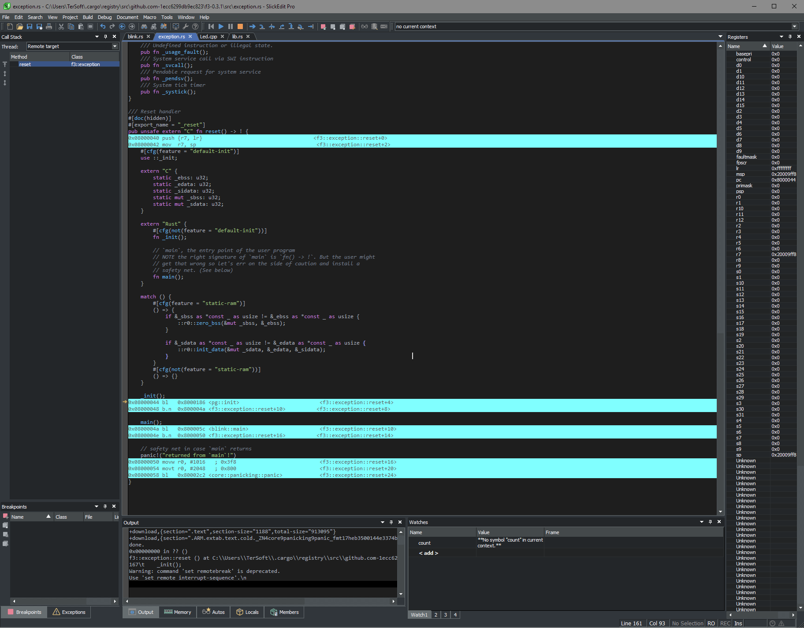

Прожект "SlickEdit использовать как IDE для embedded разработки в Windows 10"
Первый успех!
Сегодня получилось подключить SlickEdit к OpenOCD на платке STM32F4DISCOVERY, и оно заработало ...
Это стало возможно благодаря Мозжевилов Андрей Борисович, г. Екатеринбург. Огромное ему спасибо.
Вот ссылка
Также положил у себя https://Bocha91.github.io\Slick\SlickEdit_OpenOCD_1_0.rar

Первыe разочарования :(
- SlickEdit умеет подхватывать проекты Cargo.toml, а embedded разработки делают Xargo.toml и у меня не получилось
нормально подцепить готовый проекты на RUST. Пришлось сделать С/С++ проектик
- Нет возможности посмотреть регистры переферии. Наверное придётся написать довольно сложный плагин или макрос ...
- Окошко Registers нужно привести в соответствие, что то там много воды
- Ещё напрягло нечёткой работой disassembler'а, код не всегда показывался при переходе от файла к файлу.
Но возможно этот баг исправится когда создам нормально проект, а то сейчас каша, проект для С/С++ а бинарник я взял от RUST
просто под рукой небыл другого
Разочарования продолжаются :(
Сделал проект для С/С++ в SEGGER Embedded Studio 3.30, проверил работает.
Также сделал в этой директории проект для С/С++ SlickEdit и запустил отладку.
Вот этот проектик и настройки для SlickEdit.
В нем некоторые пути абсолютные, у меня лежал в корне E:/
Теперь включение дизассаемблера работает в каждом файле и это радует но:
- При переходе из файла в файл дизассемблер отключается и его приходится снгова включать
- Стэпать по командам ассемблера не получается, только по строкам кода, это плохо. Я так понимаю что если было
отдельное окно с дизассемблером то было-бы возможно, а в смешанном окне кода и дизассемблера нельзя, поскольку
SlickEdit не понимает что от него хотят.
- Ещё напрягло что регистры не обновляются при пошаговом выполнении, да и при остановке по брейкпоинт тоже
не обновляются, обновятся если запустить на выполнение а за тем прервать
Продолжение може и не последует ...